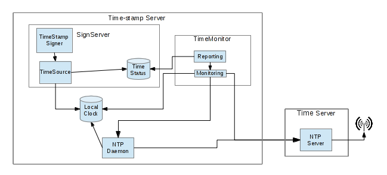

SignServer TimeMonitor
The SignServer TimeMonitor is an implementation of the type of application that can be used together with the StatusReadingLocalComputerTimeSource for monitoring of the local time and informing SignServer about its state.
The application is started separately from SignServer and runs in its own process. The important part is the main loop which repeatably performs the following steps:
-
Calculate the time difference between the local time and the time of the time server by invoking the 'ntpdate' command.
-
The result is compared with the configured allowed time difference and if the time is within the interval the time is considered in sync.
-
The status is then published to SignServer using HTTP. The status is stored with an expiration time and it is therefor important that the application gets time to perform a new round and publish updated results before the expiration.
Changes to the TimeMonitor states are logged using Log4j.
The current status of the TimeMonitor can be queried using HTTP from a Health check page.
System overview

Picture: Interactions between SignServer, TimeMonitor and Time Server. Logging and general monitoring is left out.
Assumptions
-
The local time of the server is synchronized with an external time server using for instance the NTP daemon.
-
The external time server is synchronized with a reliable national time source or GPS.
-
The external time server has an NTP service that can be queried often from the TimeMonitor application on each server.
-
The time-stamp signer(s) uses the StatusReadingLocalComputerTimeSource.
Note: The TimeMonitor application can be configured to query the time server more often than the NTP standards allow (i.e. more often than every 15 seconds). It is therefor important not to run the TimeMonitor application against an online NTP service. The TimeMonitor application must only be run towards a dedicated NTP server under your own control.
Installation
The application is built with SignServer. In the binary distribution and on the SignServer Appliance the application is already available but if you build from source you will need to have "includemodulesinbuild=true" (default) or the property "timemonitor.enabled=true" specified in conf/signserver_deploy.properties when building.
Configuration
The configuration can be done in conf/timemonitor.properties.
Note: The conf/ folder is included on the classpath when running the application using the wrapper script bin/timemonitor-in-background.sh. If the application is run some other way, edit src/timemonitor.properties or make sure conf/ is included in the classpath.
The 'application properties' listed in the next section are required to be specified in the properties file. The other set of properties called 'runtime properties' can either all be specified in the property file or be queried from a TimeMonitorManager worker in SignServer.
Application properties
Note: On the SignServer Appliance, the TimeMonitor is already configured with signserver.managedconfig=true and the other Application properties below are not relevant in that case.
|
Configuration property |
Description |
|
timeserver.ntpdatecommand |
Path to the nptdate command executable. Sample value: "/usr/sbin/ntpdate" |
|
timeserver.ntpqcommand |
Path to the ntpq command executable |
|
|
|
|
timemonitor.stateweb.enabled |
Set to "true" to enable (or "false" to disable) the state web server (Health check). |
|
timemonitor.stateweb.bindaddress |
IP address the server will bind to. Use "0.0.0.0" to bind to all interfaces and give external access to the server. |
|
timemonitor.stateweb.port |
TCP port to offer state information (HTTP) on. |
|
timemonitor.stateweb.threads |
Number of threads in the thread pool handling incoming connections. |
|
timemonitor.stateweb.backlog |
Maximum number of queued incoming connections to allow. Incoming queued connections exceeding this limit may be rejected. If 0 is specified a system default value is used. Sample value: "0" |
|
|
|
|
signserver.process.url |
URL to the SignServer process that will handle the status update. Sample value: "http://localhost:8080/signserver/process" |
|
signserver.statuspropertiesworker.name |
Name of the StatusPropertiesWorker that will handle the status update. Note: SignServer will have to be configured with a either a StatusPropertiesWorker or a TimeMonitorManager with this name. It needs to use an Authorizer which gives the TimeMonitor access. For instance AUTHTYPE=NOAUTH can be used but that would also give everybody permission to update the status. Instead as the TimeMonitor is running on the same host as SignServer it is recommended to use an RemoteAddressAuthorizer and only allow requests from localhost. Sample value: "StatusPropertiesWorker" |
|
signserver.statusproperty.name |
Name of the status property to update for time synchronization status.
Sample value: "TIMESOURCE0_INSYNC" |
|
signserver.leapstatusproperty.name |
Name of the status property to update for leap second |
|
|
|
|
signserver.managedconfig |
When set to "true" the 'runtime properties' in the next section are not allowed in the configuration file but are instead queried from a TimeMonitorManager in SignServer. In this mode the TimeMonitor will start up disabled, meaning that the timeserver and NTP daemon will not be queried until the TimeMonitor gets an updated configuration from SignServer. In this mode the TimeMonitor will query SignServer every 15 seconds. |
Runtime properties
The following additional properties can be specified in the configuration file if signserver.managedconfig=false or in the TimeMonitorManager if signserver.managedconfig=true.
|
Configuration property |
Description |
|
timeserver.host |
Hostname or IP address of the time server that should be queried. Can also be a comma-separated list to use several servers as fallbacks. The ntpdate command will be called with all hosts as arguments and the first one returning a valid response will be used. Sample value: "192.168.20.10, 192.168.20.11" |
|
timeserver.sendsamples |
Number of samples (NTP packets) to send to the time server. This is the "-p" option of ntpdate and can be from 1 to 8 inclusive. Sample value: "2" |
|
timeserver.timeout |
Maximum wait time for response from the time server. This is the "-t" option of ntpdate. The unit is seconds but fractions rounded to a multiple of 0.2 are supported. Sample value: "0.2" |
|
timemonitor.maxAcceptedOffset |
Maximum difference (in milliseconds) for the local time as compared to the time server for the time status to still be INSYNC. Sample value: "997" |
|
timemonitor.warnOffset |
Difference (in milliseconds) for the local time as compared to the time server when the state changes to SOON_OUT_OF_SYNC. Sample value: "500" |
|
timemonitor.statusExpireTime |
Expire time (in milliseconds) to set when publishing the status to SignServer. Note: Make sure the TimeMonitor has enough time to run one round and publish a new value before the expiration otherwise SignServer will not be able to issue time-stamp tokens for a period of time. Sample value: "900" |
|
timemonitor.leapStatusExpireTime |
Expire time (in milliseconds) to set when publishing the leap second status to SignServer. Sample value: "60000" |
|
timemonitor.minRunTime |
Minimum time for one round by the TimeMonitor. If checking the time and publishing the status is performed in shorter time than this value (in milliseconds), TimeMonitor will sleep for the remaining time. Sample value: "500" |
|
timemonitor.warnRunTime |
If performing one round of checking the time and publishing the status takes longer time then this (in milliseconds) change the report state to REPORTED_BUT_EXPIRE_TIME_SHORT. This happening is an indication that the time settings needs to be adjusted. Sample value: "700" |
|
timemonitor.disabled |
When set to "true" the TimeMonitor is explicitly set in disabled mode, meaning that the timeserver and NTP daemon will not be queried until the TimeMonitor gets an updated configuration from SignServer. In this mode the TimeMonitor will query SignServer every 15 seconds. |
Usage
The application can be started to run in background by issuing:
$ bin/timemonitor-in-background.sh
Watch signserver-timemonitor.log for output.
Logging
Logging is configured in conf/log4j.properties (given that the wrapper scripts in bin/ is used to run the application).
By default events with the INFO level is logged to a local file called signserver-timemonitor.log.
It is recommended to use syslog or similar mechanisms to send the logs to a remote server where they can be inspected when the time is detected to be out of sync.
The TimeMonitor maintains three different types of states: Time state, Report state, and Leap state.
Time State for time synchronization describes the status of the time source and can be:
-
INSYNC: The time is in sync as it was detected to be within the configured range.
-
SOON_OUT_OF_SYNC: The time is in sync but was detected to be withing the configured range to give a warning.
-
OUT_OF_SYNC: The time was detected to be out of sync.
-
UNKNOWN: The status of the time is unknown as the time server has not yet been contacted, it could not be contacted or that some other error occurred preventing the TimeMonitor from getting the status.
Report State describes the status of the publishing of the results to SignServer and can be:
-
REPORTED: The results were successfully published to SignServer.
-
REPORTED_BUT_EXPIRE_TIME_SHORT: The results were successfully published to SignServer but the time it took to perform the measurements and publish it was longer than the time configured as timemonitor.warnRunTime.The log gives more information about the actual run time and how much time was spent during query and publishing when the state changes to this state.
-
FAILED_TO_REPORT: The results could not be published to SignServer.An error message could be available in the log when the state changes to this state.
Leap State is reported to SignServer with the following values:
-
NONE: No leap second is scheduled at the next possible leap second occurrence.
-
POSITIVE: A positive (inserted) leap second is scheduled at the next possible leap second occurrence.
-
NEGATIVE: A negative (removed) leap second is scheduled at the next possible leap second occurrence.
-
UNKNOWN: Leap second state was unknown when querying the NTP daemon.
See also the section on StatusReportingLocalComputerTimeSource in SignServer about setting up leap second handling.
Examples
Each time any of the states changes the new Time, Report, and Leap states are logged at INFO level:
14:56:01,983 INFO TimeMonitorRunnable:60 - Started
14:56:02,491 ERROR TimeMonitorRunnable:214 - Command failed (1): 31 Oct 14:56:02
ntpdate[26321]: no server suitable for synchronization found
14:56:02,511 ERROR TimeMonitorRunnable:268 - Failed to update status property: Connection
refused
14:56:02,515 INFO TimeMonitorRunnable:91 - State changed to: UNKNOWN,FAILED_TO_REPORT,NONE
14:58:11,152 INFO TimeMonitorRunnable:91 - State changed to: UNKNOWN,REPORTED,NONE
15:01:23,310 INFO TimeMonitorRunnable:91 - State changed to: INSYNC,REPORTED,NONE
When the state changes from INSYNC or SOON_OUT_OF_SYNC to either OUT_OF_SYNC or UNKNOWN an additional log entry also outputs the last time that was determined to be in sync:
15:32:05,990 INFO [TimeMonitorRunnable] State changed to: INSYNC,REPORTED,NONE
15:32:06,492 INFO [TimeMonitorRunnable] State changed to: OUT_OF_SYNC,REPORTED,NONE
15:32:06,492 INFO [TimeMonitorRunnable] Last trusted time was: 2012-11-27 15:32:05,990Monitoring
The current state of the TimeMonitor application can also be monitored from an external service if the state-showing web (Health check) server is enabled. The state web page returns the current state as a comma separated list of values.
-
Update time: The current time when the expiration time to set was calculated
-
Time state: See states under Logging section
-
Report state: See states under Logging section
-
Leap state: See states under Logging section
-
Config version: Identifier for the last configuration received
-
Time offset: The measured difference in time with the time server
-
Time server query time: The time it took to query the time server
-
NTP daemon query time: The time it took to query the leap state
-
Report time: The time it took to report the status to SignServer.
Example getting the current state:
$ curl http://tsaserver:8980/state
1409050686281,INSYNC,REPORTED,NONE,1ccdf46b,0,508,8,6
Rate-limiting
If an NTP server responds with a rate-limiting "kiss of death" response, the time monitor will log an error and stop querying and the state will be set to UNKNOWN. The time monitor will resume querying on the next configuration update (i.e. setting another NTP server host).